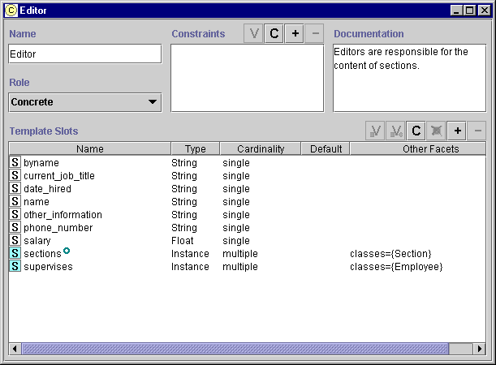

You can edit an existing class using the Class Form. You can access the Class Form in one of two ways:
To edit a class from the Classes Tab:
To edit a class from the Class pane at the Instances Tab:
Note: If the class appears as one of the Allowed Parents for a slot
of type Class, you can also open the
Class Form by going to an instance that has that slot and clicking on the View  icon. See Standard
Widgets for more information.
icon. See Standard
Widgets for more information.
Note: If the class is included from another project, it cannot be edited. Included classes are shown with a pale class icon to the left. See Including a Project for more information.

Any changes you enter into the Class Form take effect immediately. To make the changes permanent, save the knowledge base by selecting Save from the Project menu.
To revert to the last saved version, close Protégé-2000 without saving changes. If you have made extensive changes to your knowledge base during the current session, you may wish to save before editing classes.
To change the name of a class, edit the name in the Name field. The following rules apply to class names:
The name must be a unique frame name in the knowledge base.
Class names are case sensitive.
A recommended convention is to make the first character of each word in a class name uppercase and the rest lowercase, and to separate words by underscores.
Select the new role from the Role menu. Concrete classes may have direct instances, but do not have to; abstract classes cannot have direct instances. Protégé-2000 does not impose any restrictions on the role of your classes.
Class constraints are defined programatically. See Constraints for more information.
To change the notes for a class, change the text directly in the Class Documentation pane.
The Template Slots pane allows you to edit, create, add, and remove slots from your class.
You can edit the slot in one of two ways:
At the top level. Editing the slot at the top level affects the slot everywhere it appears, including the Slots Tab and any classes where the slot is attached.
At the class. Editing the slot at the class level (called overriding)
only affects the slot at the class and any subclasses. The slot remains unchanged at the Slots Tab and any unrelated classes where appears. A slot that has been overridden has an  override icon in the left column.
override icon in the left column.
To edit a slot at the top level:
Highlight the slot name in the Template Slots pane
Click the top-level View  button at the top right of the pane. The Slots Form is displayed.
button at the top right of the pane. The Slots Form is displayed.
Use the Slots Form to edit slot properties such as Name, Type, Cardinality, and to add notes. See Viewing a Slot for more information on how to edit a slot.
Highlight the slot name in the Template Slots pane
Click the Class-Level View  button at the top right of the pane. The Slots Form is displayed.
button at the top right of the pane. The Slots Form is displayed.
Use the Slots Form to edit slot properties such as Name, Type, Cardinality, and to add notes. See Viewing a Slot for more information on how to edit a slot.
Your class can have slots that were inherited from a superclass. If the slot is defined globally or is inherited, only the following edits can be performed:
For Cardinality, the slot may be changed from Multiple to Single (but not vice versa).
For certain slot Types, some restrictions apply:
For a slot of type Any, the slot may be restricted to one of the other types (Boolean, Class, Float, Instance, Integer, String, or Symbol). Slots of type other than Any cannot have the type changed.
For a slot of type Class, the allowed parents can only be changed to subclasses of the allowed classes in the parent class.
For a slot of type Instance, the allowed classes can only be changed to subclasses of the allowed classes in the parent class.
A Minimum value may be created or increased. The Minimum value is only available for types Integer or Float.
A Maximum value may be created or decreased. The Maximum value is only available for types Integer or Float.
The Documentation can be changed.
Direct slots, which were created or added at the level of the slot, have no editing restrictions.
If you have edited a slot at the class level, the slot is displayed with
an override icon.
icon.
You can define a new slot for your class.
Make sure the correct class is highlighted in the Class Relationship pane.
Click the Create  button at the top right of the pane. The Slots
Form is displayed.
button at the top right of the pane. The Slots
Form is displayed.
Use the Slots Form to edit slot properties such as Name, Type, Cardinality, and to add notes. See Creating a Slot for more information on how to create a slot.
A direct slot is displayed with a blue  icon.
icon.
If you have overriden a slot at the class, you can remove your overrides and use the top-level definition of the slot:
Highlight the slot name in the Template Slots pane
Click the Clear Overrides  button at the top right of the pane. Any changes you
made at the class level are removed and the top-level definition of the slot is
used.
button at the top right of the pane. Any changes you
made at the class level are removed and the top-level definition of the slot is
used.
Once slots have been created, you can add them to more than one class. For example, the Prototype_Newspaper class has a Weekday slot, which can be used to choose among the days of the week. If you were creating a new type of employee who wrote a weekly feature, you might want to reuse this slot.
To choose a pre-existing slot to add to your class:
Make sure the correct class is highlighted in the Class Relationship pane.
Click the Add  button at the top right of the pane. The Select Slots dialog box displays all
the slots you can add to the class.
button at the top right of the pane. The Select Slots dialog box displays all
the slots you can add to the class.
Highlight the slot you wish to add to your class.
Click OK.
The new slot is added to the Template Slots pane. It is a directly attached slot and is
displayed with a blue  icon. You do not need to name the slot; however, you may need to override its facets. If
you wish to override the facets on the slot, you may click the Top-Level View
icon. You do not need to name the slot; however, you may need to override its facets. If
you wish to override the facets on the slot, you may click the Top-Level View  or Class-Level View
or Class-Level View  button to display the Slot Form. See Viewing
a Slot for more information.
button to display the Slot Form. See Viewing
a Slot for more information.
You can remove any direct slot that appears in the Template Slots pane. To remove a slot:
Note that the slot has not been deleted from the knowledge base. It will still appear in the Select Slots dialog box (see Adding a Slot, above) and the Slots Tab. See Deleting a Slot for more information.
To view or edit the information for several classes
at once, select the classes one by one and click the View  class button to open the
Class Form for each class. Opening a new class form does not close the
previous form. This allows you to compare the attributes for two or more classes. Edits
can be made directly in any open Class Form.
class button to open the
Class Form for each class. Opening a new class form does not close the
previous form. This allows you to compare the attributes for two or more classes. Edits
can be made directly in any open Class Form.
To change the superclasses of a class see: Adding a Superclass, Replacing a Superclass, and Removing a Superclass.